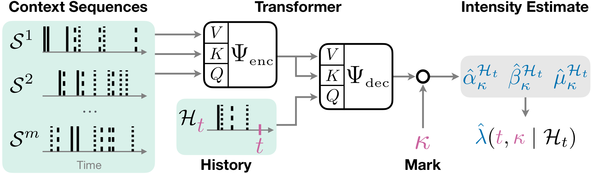
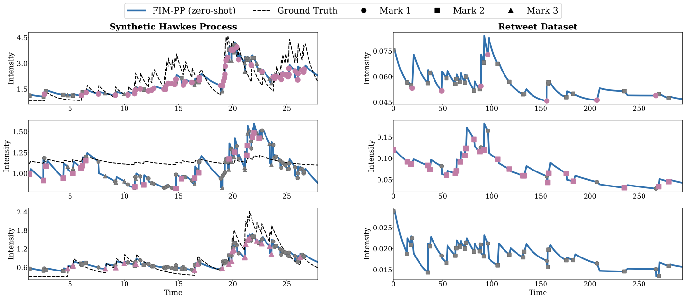

Point Processes: A Crash Course#
This section gives the minimum background needed to use FIM-PP and is adapted from [BSC+26].
What FIM-PP Infers#
FIM-PP is a Foundation Inference Model for marked temporal point processes. A marked temporal point process is a sequence of event times
where each event arrives at time \(t_i\) and carries a discrete mark \(\kappa_i\) describing its type.
The goal is to infer the conditional intensity
which describes how likely an event of type \(\kappa\) is to occur at time \(t\) given the history \(\mathcal{H}_t\).
Rather than training a new neural point-process model for every dataset, FIM-PP is pretrained on a broad synthetic distribution of point processes and then used in-context on new event data.

Fig. 2 FIM-PP encodes context paths and attends to them when estimating the conditional intensity of a target history.#
Hawkes Processes as the Training Prior#
The released checkpoint is trained on a broad family of Hawkes-style processes. For each mark \(k\), the conditional intensity is of the form
where
\(\mu_k(t)\) is a base intensity,
\(\gamma_{k\kappa_i}\) is an interaction kernel, and
\(z_{k\kappa_i}\) determines whether the interaction is excitatory, inhibitory, or absent.
This gives FIM-PP a strong prior over interpretable point-process dynamics while still allowing the pretrained model to generalize beyond the exact synthetic processes seen during training.
Inputs and Outputs#
The released FIM-PP checkpoint expects a context/inference split:
context_event_times,context_event_types,context_seq_lengthsinference_event_times,inference_event_types,inference_seq_lengthsintensity_evaluation_times
Given these tensors, the model returns predicted Hawkes intensity parameters together with evaluated intensity curves. If ground-truth functions are provided, it can also return target intensity values and losses for comparison.
Zero-Shot Use vs Fine-Tuning#
Zero-shot: Use the pretrained checkpoint directly on a new dataset and inspect the predicted intensity curves or downstream next-event behavior.
Fine-tuning: Continue training the pretrained checkpoint on a target dataset using
scripts/hawkes/fim_finetune.py. This is useful when the target domain contains recurring patterns that are weakly represented by the synthetic prior.
The released checkpoint is configured for up to 22 marks.

Fig. 3 Example intensity estimates from the FIM-PP paper on synthetic and real-world data.#
Practical Recommendation#
For user-facing workflows, prefer the standardized Hugging Face path:
from transformers import AutoModel
model = AutoModel.from_pretrained("FIM4Science/FIM-PP", trust_remote_code=True)
This is the primary path documented in the companion tutorial notebook. The lower-level fallback FIMHawkes.load_model(...) remains useful for debugging local checkpoints.
Bibliography#
David Berghaus, Patrick Seifner, Kostadin Cvejoski, Cesar Ojeda, and Ramses J Sanchez. In-context learning of temporal point processes with foundation inference models. In The Fourteenth International Conference on Learning Representations. 2026. URL: https://openreview.net/forum?id=h9HwUAODFP.